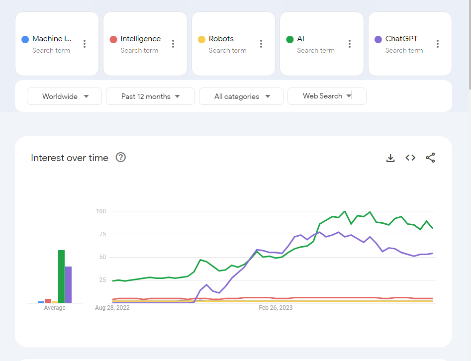
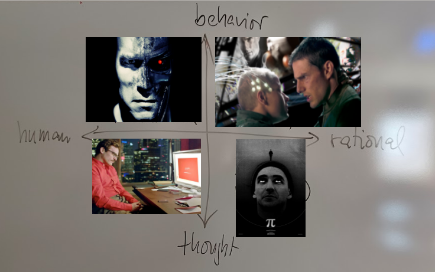
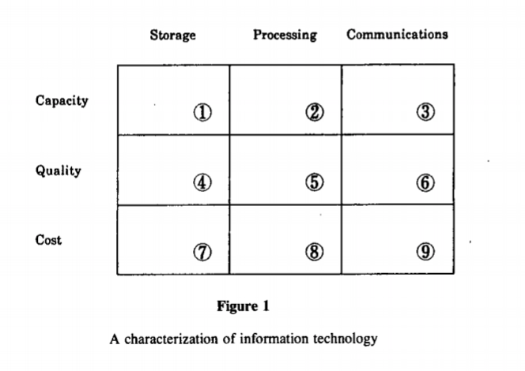

What is AI?
Seminar on Artificial Intelligence Fall 2023
Marcus Birkenkrahe
Created: 2023-08-25 Fri 07:50
What're you going to learn?
- What is intelligence?
- Different approaches to AI
- The standard model of AI
- Bounded rationality
- The Value alignment problem
- Asimov's Robot Laws
- What's next?
What is intelligence?
Search patterns

Group work
- Get together in groups of 2-3
- Define INTELLIGENCE (5')
- Define ARTIFICIAL INTELLIGENCE (5')
- Briefly present your results (10')
ChatGPT's view
Is there something about human intelligence that is specifically human and not shared by machines or other non-human beings?
"While AI has made significant strides in replicating specific tasks that were once the domain of human intelligence, there remain several aspects that are uniquely human and are far from being fully understood or replicated by machines."
Different approaches to AI
Which fields of inquiry (= disciplines) to use?
Fields of systematic inquiry

- Language
- Philosophy
- Science
- History
Fundamental questions

- Should we focus on humans?
- Should we focus on machines?
Four approaches
| THOUGHT / LOGIC | BEHAVIOR / ACTION | |
|---|---|---|
| HUMANITY | Cognitive modeling | Turing Test |
| RATIONALITY | Laws of Thought | Rational Agents |
Four scenarios

Acting humanly ("Turing test" approach)
| Natural language processing |
| Knowledge representation |
| Automated reasoning |
| Machine learning |
| Computer vision |
| Robotics |
Thinking humanly ("cognitive modeling" approach)
| Introspection |
| Psychological experiments |
| Brain imaging |
| Cognitive science |
| Algorithms |
Thinking rationally ("laws of thought" approach)
| Syllogistic reasoning |
| Logic |
| Expert systems |
| Uncertainty |
| Probability |
Acting rationally ("rational agent" approach)
| Combination approach |
| Constructivist |
| Doing the right thing |
| Standard model |
| Control theory |
Major issues
- Bounded Rationality
- Value alignment problem
Bounded rationality

Image: Bakopoulos, 1985
AIMA: "For perfect rationality, the computational demands are just too high."
Value alignment
Image: The Mechanical Turk
AIMA: "The values or objectives put into the machine must be aligned with those of the human."
Pros and cons
- Get together in groups of 2-3
- Each group covers one approach
- List pros and cons of your approach
- Put your results on the Kanban board
Asimov's robot laws

Image: cover of "I, Robot" by Isaac Asimov (1940)
Which approach fits these laws best?
- A robot may not injure a human being or, through inaction, allow a human being to come to harm.
- A robot must obey the orders given it by human beings except where such orders would conflict with the First Law.
- A robot must protect its own existence as long as such protection does not conflict with the First or Second Law.
Russell's AI Principles (Asimov 2.0)
- The machine's only objective is to maximis the realisation of human preferences.
- The machine is initially uncertain about what those preferences are.
- The ultimate source of information about human preferences is human behaviour.
Pasquale's Laws
- Robotic systems and AI should complement professionals, not replace them.
- Robotic systems and AI should not counterfeit humanity.
- Robotic systems and AI should not intensify zero-sum arms races.
- Robotic systems and AI must always indicate the identity of their creator(s), controller(s), and owner(s).
What's next?
- Scientific foundations of AI
- History of AI
Any questions?

References
Bakopoulos, J. Yannis, "Toward a More Precise Concept of Information Technology" (1985). ICIS 1985 Proceedings. 4. http://aisel.aisnet.org/icis1985/4